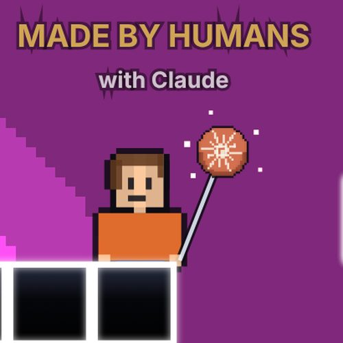
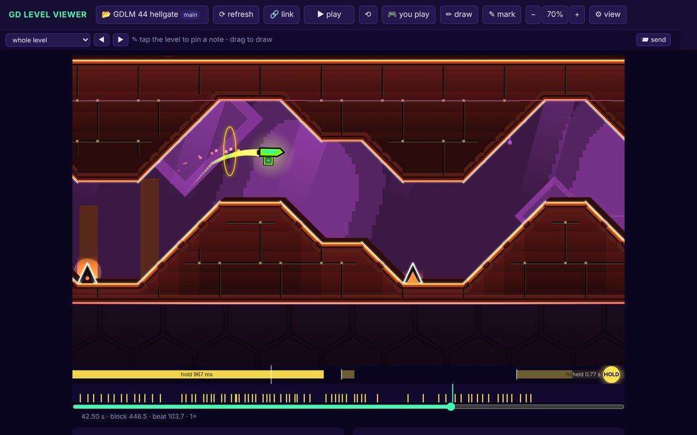
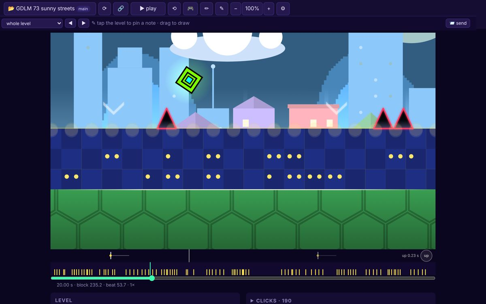
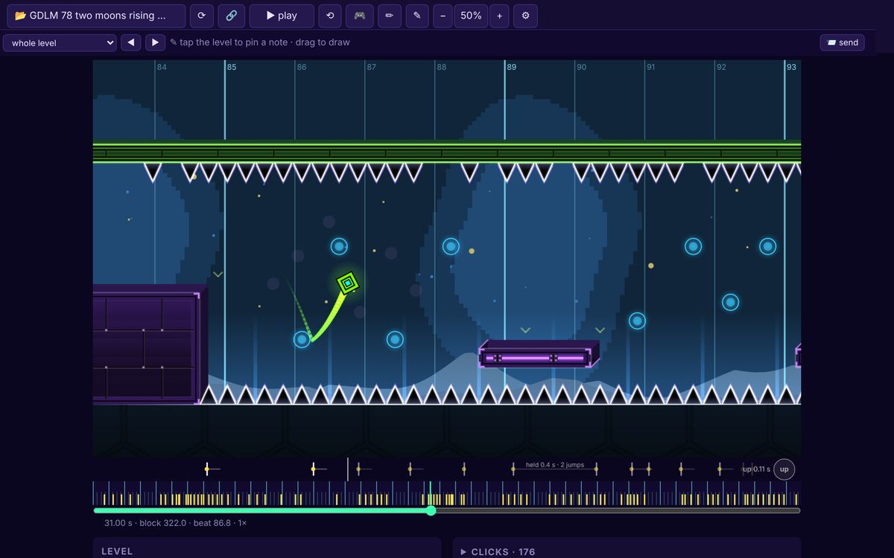
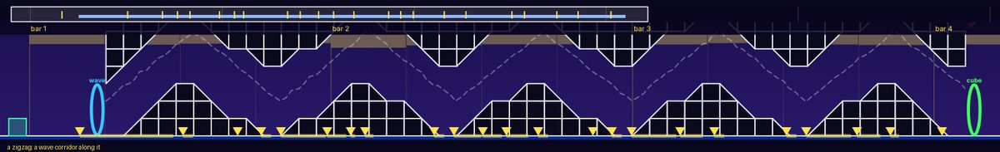
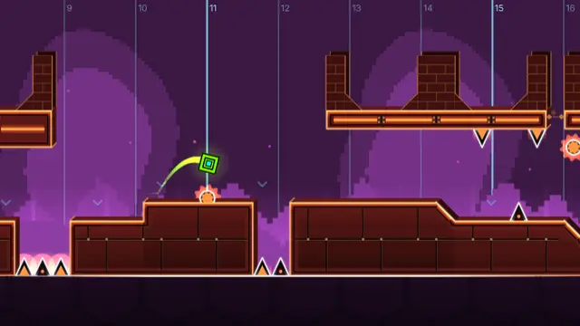
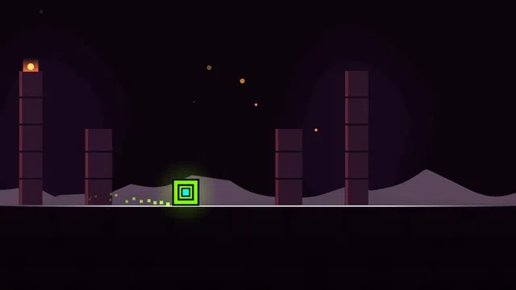
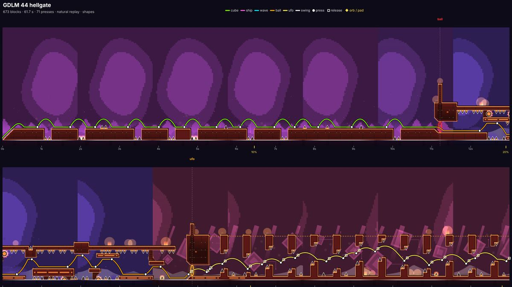
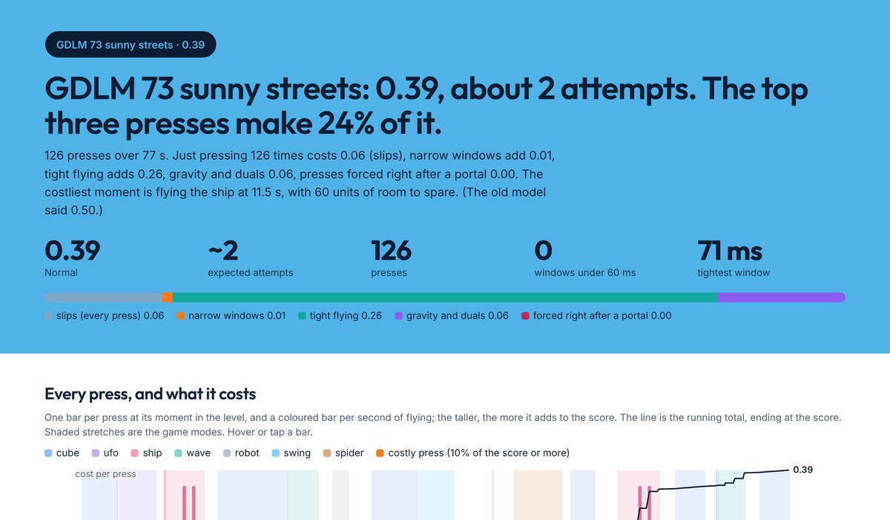
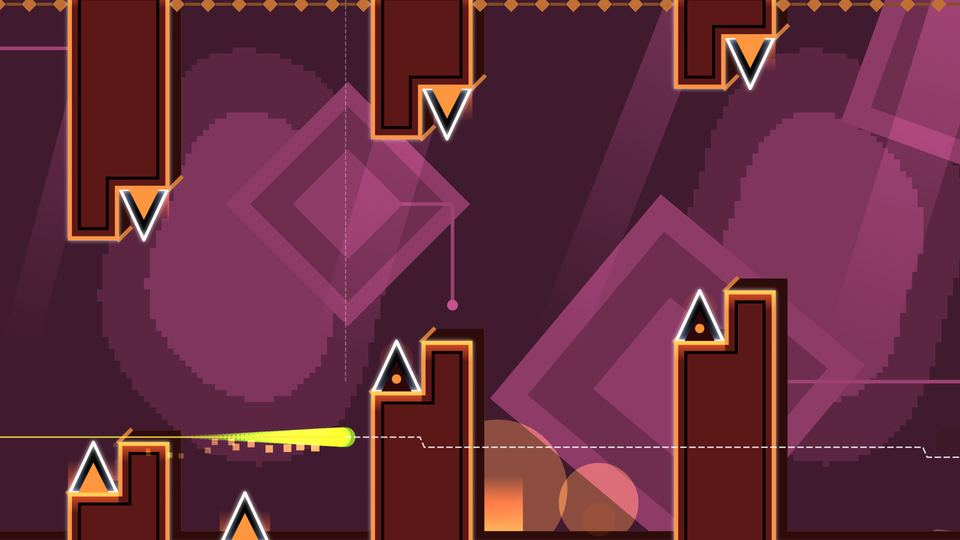

<title>GDWorkbench showcase</title>
<meta name="claude:viewport-fit-sides" content="cover">
<meta name="viewport" content="width=device-width,initial-scale=1">
<link rel="preconnect" href="https://fonts.googleapis.com">
<link href="https://fonts.googleapis.com/css2?family=Lilita+One&family=Inter:wght@400;600;700&display=swap" rel="stylesheet">
<style>
/* VOICE occasion: an invitation to a workshop, warm and confident, not a sales page
   IDEA a workbench tour: each tool on its own bench row, a real screenshot beside two lines of what it does
   PICTURE the hero is the person with the Claude wand (our end sign); then the tools' own screens
   COLOUR plum night #1a0d1c, ember orange #ff9a3c, magenta #d0559a, lime player #b8ff3a as the one sharp accent
   TYPE Lilita One (game lettering) + Inter
   LAYOUT laptop: frame full-bleed with title in its lower-left corner; phone: frame, title, buttons stacked */
:root{color-scheme:dark;--bg:#1a0d1c;--bg2:#24132a;--line:#3d2440;--ink:#f6ecf3;--mute:#c9b3c4;--ember:#ff9a3c;--mag:#d0559a;--lime:#b8ff3a;--blue:#58c6ff}
*{box-sizing:border-box;min-width:0}
body{background:var(--bg);color:var(--ink);font:16px/1.55 Inter,system-ui,sans-serif;margin:0;overflow-x:clip}
a{color:var(--ember)}
h1,h2,h3{font-family:"Lilita One",Impact,sans-serif;font-weight:400;letter-spacing:.005em;line-height:1.05;margin:0}
.wrap{max-width:1240px;margin:0 auto}
.band{padding-block:clamp(22px,3vw,44px);padding-left:max(5vw,16px,env(safe-area-inset-left,0px));padding-right:max(5vw,16px,env(safe-area-inset-right,0px))}
.hero{position:relative;background:#000}
.hero img{display:block;width:100%;height:min(78svh,720px);object-fit:cover;object-position:center 60%}
.hero .cap{position:absolute;left:0;right:0;bottom:0;padding:28px max(5vw,16px) 26px;background:linear-gradient(transparent,rgba(16,6,18,.92) 45%)}
.hero h1{font-size:clamp(40px,6.4vw,76px);max-width:14ch}
.hero p{margin:.4em 0 1em;max-width:56ch;color:var(--ink);font-size:17px}
.ctas{display:flex;flex-wrap:wrap;gap:10px}
.btn{display:inline-flex;align-items:center;gap:8px;padding:10px 16px;border-radius:10px;background:var(--bg2);border:1px solid var(--line);color:var(--ink);text-decoration:none;font-weight:600}
.btn.main{background:var(--lime);color:#13200a;border-color:var(--lime)}
.id{font-variant-numeric:tabular-nums;letter-spacing:.04em}
details.sec{border-top:1px solid var(--line)}
details.sec>summary{list-style:none;cursor:pointer;display:flex;align-items:baseline;gap:14px;padding-block:22px 6px;padding-left:max(5vw,16px);padding-right:max(5vw,16px)}
details.sec>summary::-webkit-details-marker{display:none}
details.sec>summary h2{font-size:clamp(28px,3.4vw,40px)}
details.sec>summary .k{color:var(--mute);font-size:15px}
details.sec>summary::after{content:"▾";margin-left:auto;color:var(--mute);transition:transform .15s}
details.sec:not([open])>summary::after{transform:rotate(-90deg)}
details.sec>summary:hover h2{color:var(--ember)}
.lead{color:var(--mute);max-width:70ch;margin:0 0 18px}
.steps{display:grid;grid-template-columns:repeat(4,minmax(0,1fr));gap:0}
@media(max-width:640px){.steps{grid-template-columns:repeat(2,minmax(0,1fr))}}
.step{position:relative;padding:14px 14px 14px 0}
.step b{display:block;font-family:"Lilita One";font-weight:400;font-size:21px;color:var(--ember)}
.step span{color:var(--mute);font-size:14.5px}
.step:before{content:"";display:block;height:6px;border-radius:3px;background:linear-gradient(90deg,var(--mag),var(--ember));margin-bottom:12px;margin-right:6px}
.two{display:grid;grid-template-columns:minmax(0,1.35fr) minmax(0,1fr);gap:28px;align-items:start}
@media(max-width:820px){.two{grid-template-columns:1fr}}
.card{background:var(--bg2);border:1px solid var(--line);border-radius:14px;padding:18px}
.score{display:flex;align-items:baseline;gap:10px;margin-bottom:10px}
.score .big{font-family:"Lilita One";font-size:54px;color:var(--ember)}
.bars{display:grid;grid-template-columns:auto minmax(0,1fr) 2.2em;gap:6px 10px;align-items:center;font-size:14px}
.bars i{display:block;height:9px;border-radius:5px;background:var(--line);overflow:hidden}
.bars i>u{display:block;height:100%;background:var(--ember)}
.bars em{font-style:normal;text-align:right;font-variant-numeric:tabular-nums;color:var(--mute)}
.facts{display:grid;grid-template-columns:repeat(auto-fit,minmax(8.5em,1fr));gap:10px;margin:16px 0}
.facts div{background:var(--bg);border-radius:10px;padding:10px 12px}
.facts b{display:block;font-size:19px}
.facts small{color:var(--mute);font-size:13px}
ul.notes{margin:10px 0 0;padding-left:1.1em;color:var(--mute);font-size:14.5px}
.map{border-radius:12px;overflow:hidden;border:1px solid var(--line);max-height:640px;overflow-y:auto}
.map img{display:block;width:100%}
.strip{display:grid;grid-template-columns:repeat(4,minmax(0,1fr));gap:8px;margin-top:14px}
@media(max-width:600px){.strip{grid-template-columns:repeat(2,minmax(0,1fr))}}
.strip img,.gal img{display:block;width:100%;border-radius:10px;aspect-ratio:16/9;object-fit:cover}
.gal{display:grid;grid-template-columns:repeat(auto-fill,minmax(250px,1fr));gap:14px}
.gal figure{margin:0}
.gal figcaption{font-size:14px;color:var(--mute);padding-top:6px}
.tabs{display:flex;flex-wrap:wrap;gap:6px;margin-bottom:14px}
.tabs button{font:600 14px Inter,sans-serif;color:var(--ink);background:var(--bg2);border:1px solid var(--line);border-radius:999px;padding:7px 13px}
.tabs button[aria-pressed=true]{background:var(--ember);color:#2a1100;border-color:var(--ember)}
.gen{display:grid;gap:14px}
.gen .row{background:var(--bg2);border:1px solid var(--line);border-radius:12px;padding:10px 12px}
.gen .row h3{font:600 14px Inter,sans-serif;color:var(--mute);margin-bottom:6px}
.gen svg{display:block;width:100%;height:auto}
.anim{display:grid;grid-template-columns:repeat(2,minmax(0,1fr));gap:14px}
@media(max-width:700px){.anim{grid-template-columns:1fr}}
.scroll{overflow-x:auto}
table{border-collapse:collapse;width:100%;font-size:14.5px}
th,td{padding:7px 8px;border-bottom:1px solid var(--line);text-align:left;white-space:nowrap}
th{color:var(--mute);font-weight:600}
td.n{text-align:right;font-variant-numeric:tabular-nums}
.lad{display:block;height:10px;border-radius:5px;background:linear-gradient(90deg,var(--mag),var(--ember));min-width:4px}
.ok{color:var(--lime)}.no{color:var(--mute)}
.uses{display:grid;grid-template-columns:repeat(auto-fill,minmax(230px,1fr));gap:12px}
.use{background:var(--bg2);border:1px solid var(--line);border-radius:12px;padding:14px}
.use b{display:block;margin-bottom:4px}
.use span{color:var(--mute);font-size:14px}
.tag{display:inline-block;font-size:12.5px;font-weight:700;border-radius:6px;padding:1px 7px;margin-bottom:6px}
.t-w{background:var(--lime);color:#13200a}.t-p{background:var(--ember);color:#2a1100}.t-n{background:var(--line);color:var(--ink)}
footer{color:var(--mute);font-size:14px;border-top:1px solid var(--line)}
/* hover on every button (tools/snippets/hover.css) */
button,.btn,[role=button],select,summary,input[type=button],input[type=submit]{transition:filter .12s,transform .12s,box-shadow .12s,background-color .12s}
button:hover:not(:disabled),.btn:hover,[role=button]:hover,select:hover,summary:hover,input[type=button]:hover,input[type=submit]:hover{filter:brightness(1.18);box-shadow:0 0 0 2px rgba(120,170,255,.35);cursor:pointer}
button:active:not(:disabled),.btn:active,[role=button]:active{transform:translateY(1px);filter:brightness(.95)}
@media(max-width:600px){table{font-size:13px}th,td{padding:6px 4px}}

.hero2{background:radial-gradient(120% 90% at 85% 40%,#4a1a45 0%,var(--bg) 60%);margin-top:calc(-1*env(safe-area-inset-top,0px));padding-top:calc(env(safe-area-inset-top,0px) + clamp(28px,5vw,64px))}
.hero2 .wrap{display:grid;grid-template-columns:minmax(0,1.5fr) minmax(0,1fr);gap:clamp(20px,4vw,56px);align-items:center}
.hero2 h1{font-size:clamp(40px,5.6vw,68px)}
.hero2 p{font-size:18px;max-width:52ch;margin:.6em 0 1.2em}
.hero2 .sign{border-radius:18px;width:100%;max-width:420px;justify-self:end;box-shadow:0 0 0 1px var(--line)}
@media(max-width:760px){.hero2 .wrap{grid-template-columns:1fr}.hero2 .sign{justify-self:start;max-width:300px}}
.tool{display:grid;grid-template-columns:minmax(0,1.45fr) minmax(0,1fr);gap:clamp(18px,3vw,40px);align-items:center;padding-block:22px;border-bottom:1px solid var(--line)}
.tool:last-child{border-bottom:0}
.tool:nth-child(even) .shot{order:2}
.tool .shot img{display:block;width:100%;border-radius:12px;border:1px solid var(--line)}
.tool h3{font-size:clamp(24px,2.6vw,32px);color:var(--ink);margin-bottom:8px}
.tool p{color:var(--mute);margin:0 0 8px}
.tool .cmd{font:13px/1.4 ui-monospace,Menlo,monospace;color:var(--ember);overflow-wrap:anywhere}
@media(max-width:760px){.tool{grid-template-columns:1fr}.tool:nth-child(even) .shot{order:0}}
.demo{display:grid;grid-template-columns:minmax(0,1fr) minmax(0,1fr);gap:24px;align-items:center}
@media(max-width:760px){.demo{grid-template-columns:1fr}}
.start{background:var(--bg2);border-top:1px solid var(--line)}
.start h2{font-size:clamp(28px,3.4vw,40px);margin-bottom:8px;color:var(--lime)}
.go{display:grid;grid-template-columns:repeat(3,minmax(0,1fr));gap:12px}
@media(max-width:760px){.go{grid-template-columns:1fr}}
.go div{display:flex;gap:12px;align-items:flex-start;background:var(--bg);border:1px solid var(--line);border-radius:12px;padding:14px}
.go b{font-family:"Lilita One";font-weight:400;font-size:28px;line-height:1;color:var(--ember)}
.go code{font:13px ui-monospace,Menlo,monospace;color:var(--lime);overflow-wrap:anywhere}
.ucs{display:grid;gap:4px}
.uc{display:grid;grid-template-columns:5.6em minmax(0,13em) minmax(0,1fr);gap:12px;align-items:baseline;padding:8px 0;border-bottom:1px solid var(--line)}
.uc b{font-weight:600}.uc span{color:var(--mute);font-size:14px}
@media(max-width:640px){.uc{grid-template-columns:5.6em minmax(0,1fr)}.uc span{grid-column:2}}
.dots{letter-spacing:2px;color:var(--ember);font-size:15px;white-space:nowrap}
.dots i{font-style:normal;color:var(--line)}
.legend{color:var(--mute);font-size:14px;margin:0 0 12px}
</style>
<header class="hero2 band">
 <div class="wrap">
  <div>
   <h1>A workbench for Geometry Dash, outside the editor</h1>
   <p>You bring the idea, the song and the taste. Your AI builds the layout, proves it can be beaten, explains what's hard and dresses it in a theme. You play it, mark what's off, and it gets better.</p>
   <div class="ctas">
    <a class="btn main" href="#start">How to use it</a>
    <a class="btn" href="#tools">See the tools</a>
    <a class="btn" href="https://evgiz0r.github.io/GDWorkbench/">Open the viewer</a>
    <a class="btn" href="https://github.com/evgiz0r/GDWorkbench">Source on GitHub</a>
   </div>
  </div>
  
 </div>
</header>

<section class="band start" id="start"><div class="wrap">
  <h2>Not an app. Point your AI at it.</h2>
  <p class="lead">There is nothing for you to download, install or sign up for. GDWorkbench is a repo of tools, knowledge and ideas written for an AI to read and run. Your AI does the work; you steer.</p>
  <div class="go">
    <div><b>1</b><span>Open an AI that can work with code, like Claude Code.</span></div>
    <div><b>2</b><span>Tell it: <code>use github.com/evgiz0r/GDWorkbench, read SETUP.md</code></span></div>
    <div><b>3</b><span>Ask in plain words: "a calm level on my song, Normal, mostly ship".</span></div>
  </div>
  <p class="lead" style="margin-top:14px">It finds your game, learns from the docs what we learned, and hands back a level you import into GD.</p>
</div></section>

<details class="sec" open data-fold="how"><summary><h2>From an idea to the game</h2><span class="k">every step is a tool you can steer</span></summary>
<div class="band"><div class="wrap">
  <div class="steps">
    <div class="step"><b>Song</b><span>beats, hits and drops measured</span></div>
    <div class="step"><b>Plan</b><span>sections cut where the music changes</span></div>
    <div class="step"><b>Presses first</b><span>clicks on the beat, then the blocks</span></div>
    <div class="step"><b>Generators</b><span>15 section types, any length</span></div>
    <div class="step"><b>Solver</b><span>proves it can be beaten, hunts skips</span></div>
    <div class="step"><b>Judge</b><span>layout, difficulty, fairness, taste</span></div>
    <div class="step"><b>Theme</b><span>blocks, spikes, skies, set pieces</span></div>
    <div class="step"><b>Your game</b><span>installed, and replayed in real GD</span></div>
  </div>
</div></div></details>

<details class="sec" open id="tools" data-fold="tools"><summary><h2>The tools</h2><span class="k">real screens, our own renderer</span></summary>
<div class="band"><div class="wrap">
 <div class="tool"><div class="shot"></div>
  <div><h3>See any level play</h3><p>Every level replays in the browser with its clicks. Each press shows its timing window, so you see exactly how tight a spot is.</p><p>Play it yourself with practice checkpoints, on PC or phone.</p></div></div>
 <div class="tool"><div class="shot"></div>
  <div><h3>Solved like a human</h3><p>The solver doesn't play like a bot. It finds the route a person would take: one tap per jump, early jumps off edges, few holds in the wave, no jitter.</p><p>Every press shows its timing window in milliseconds, so the tightest spots are easy to see.</p></div></div>
 <div class="tool"><div class="shot"></div>
  <div><h3>Mark it like a playtester</h3><p>Zoom out, turn on the song's beats, tap the level to pin a note or drag to draw on it. Notes go straight to Claude, and every note becomes a rule for all future levels.</p></div></div>
 <div class="tool"><div class="shot"></div>
  <div><h3>Draw it, roughly</h3><p>Sketch a line on the whiteboard and it becomes a playable piece: here a zigzag turned into a wave corridor, with the presses it needs.</p></div></div>
 <div class="tool"><div class="shot"><div class="tabs" id="gtabs"></div><div class="gen" id="gview"></div></div>
  <div><h3>Section generators</h3><p id="gconcept"></p><p>Each type is a concept in code, not a copied layout: any length, any difficulty, on the song's beat. Lime marks are the planned presses.</p></div></div>
 <div class="tool"><div class="shot"></div>
  <div><h3>Auto levels on the beat</h3><p>No clicks at all: pads, orbs and portals carry the player through the structures, timed to the song. The beat lines show the rhythm as it plays.</p></div></div>
 <div class="tool"><div class="shot"></div>
  <div><h3>Animations, in the level</h3><p>Move, rotate, colour and fade triggers placed on the beat: an arch that builds itself, a sky that burns, a gate that closes at the end. They run in the game, around the gameplay or as the ending.</p></div></div>
 <div class="tool"><div class="shot"></div>
  <div><h3>The solver's route</h3><p>A physics sim of GD 2.2 plays every level, frame by frame, and draws the route by mode. It flags skips, secret ways around structures and lazy holds.</p><p>Checked against real runs in the game through a small mod.</p></div></div>
 <div class="tool"><div class="shot"></div>
  <div><h3>Difficulty you can read</h3><p>Every press gets a cost: timing, tight flying, gravity, forced inputs. The score lines up with the main levels' stars (0.95) and with a real player's ranking.</p></div></div>
 <div class="tool"><div class="shot"><div class="card"><div class="score"><span class="big">4.1</span><span>/10 layout · example report</span></div><div class="bars" id="subs"></div></div></div>
  <div><h3>A judge on every build</h3><p>A short report card: layout sub-scores, difficulty, unfair spots, taste learned from ~330 rated levels, and the top notes pinned to the spot, before a human ever plays it.</p></div></div>
</div></div></details>

<details class="sec" open data-fold="themes"><summary><h2>Themes and looks</h2><span class="k">one gameplay, many dresses</span></summary>
<div class="band"><div class="wrap">
 <div class="anim" style="margin-bottom:16px">
  <figure style="margin:0"></figure>
  <figure style="margin:0"></figure>
 </div>
 <div class="gal" id="gal"></div>
</div></div></details>

<details class="sec" data-fold="mains"><summary><h2>Checked against the main levels</h2><span class="k">22 official levels</span></summary>
<div class="band"><div class="wrap">
  <p class="lead">The solver beats 19 of 22 in our simulator. Our difficulty score, beside the in-game stars:</p>
  <div class="scroll"><table id="mains"><thead><tr><th>Level</th><th>Stars</th><th>Our score</th><th style="width:40%"></th><th>Our tier</th><th>Beaten in sim</th></tr></thead><tbody></tbody></table></div>
</div></div></details>

<details class="sec" open data-fold="weak"><summary><h2>What it's not good at yet</h2><span class="k">honestly</span></summary>
<div class="band"><div class="wrap uses">
 <div class="use"><span class="tag t-n">weak</span><b>Effects and pulses</b><span>synced visuals are early, and most are not checked in the real game yet</span></div>
 <div class="use"><span class="tag t-n">weak</span><b>Graphics</b><span>the looks are still behind well-decorated rated levels</span></div>
 <div class="use"><span class="tag t-n">weak</span><b>Taste</b><span>it can score a level, but can't yet tell when one feels great; our own judge gives our layouts 1 to 4 out of 10</span></div>
 <div class="use"><span class="tag t-n">weak</span><b>Hard gameplay</b><span>tight, demon-style parts aren't solid yet</span></div>
 <div class="use"><span class="tag t-n">weak</span><b>The solver</b><span>not perfect: its routes are not always human-like (a too-tight press here, an odd hold there), and it still misses 3 of the 22 main levels</span></div>
 <div class="use"><span class="tag t-n">weak</span><b>The UI</b><span>it works, but it's a workshop, not a polished app</span></div>
</div></div></details>

<details class="sec" open data-fold="uses"><summary><h2>What you can ask it, scored by us</h2><span class="k">our own honest grade</span></summary>
<div class="band"><div class="wrap">
 <p class="legend">●●●●● used all the time and checked in the real game · ●●●● works, used often · ●●● works, first version · ●● built, barely tried · ● started · none yet: an idea</p>
 <div class="ucs" id="uses"></div></div></div></details>

<details class="sec" open data-fold="demo"><summary><h2>Try one in your game</h2><span class="k">a demo level</span></summary>
<div class="band"><div class="wrap demo">
  
  <div><p class="lead" style="color:var(--ink)"><b>Hellgate</b>, our first uploaded level, an early demo of the pipeline. Search <b class="id">152848491</b> in GD.</p>
  <p class="lead">Every level ends on the same quiet sign: made by humans, with Claude.</p></div>
</div></div></details>

<footer class="band"><div class="wrap">
  Unofficial, not affiliated with RobTop Games. Every picture here is drawn by our own renderer, with no game art. Songs are not hosted.
</div></footer>

<script src="gens.js"></script>
<script>
{
const esc=s=>String(s).replace(/[&<>"']/g,c=>({"&":"&amp;","<":"&lt;",">":"&gt;",'"':"&quot;","'":"&#39;"}[c]));
const subs=[["Modes",10],["Rests",10],["Flow",10],["Clarity",10],["Height",10],["Pacing",8],["Balance",5.5],["Ending",4],["Transitions",1],["Variety",0]];
document.getElementById("subs").innerHTML=subs.map(([k,v])=>`<span>${k}</span><i><u style="width:${v*10}%"></u></i><em>${v}</em>`).join("");

// generators: draw each map from its letters
const C={"#":"#7a2a1e","^":"#ffd2a8","v":"#ffd2a8","o":"#ff9a3c","q":"#ff9a3c","s":"#ff9a3c","G":"#58c6ff","N":"#d0559a"};
function drawMap(v){
  const m=v.map,R=m.length,W=m[0].length,u=10,H=R*u+18;let s="";
  for(let r=0;r<R;r++)for(let c=0;c<W;c++){const ch=m[r][c],x=c*u,y=r*u;
    if(ch==="#")s+=`<rect x="${x}" y="${y}" width="${u}" height="${u}" fill="#5a1f18" stroke="#ff9a3c" stroke-width=".6"/>`;
    else if(ch==="/")s+=`<path d="M${x} ${y+u}L${x+u} ${y}L${x+u} ${y+u}Z" fill="#5a1f18"/>`;
    else if(ch==="\\")s+=`<path d="M${x} ${y}L${x+u} ${y+u}L${x} ${y+u}Z" fill="#5a1f18"/>`;
    else if(ch==="7")s+=`<path d="M${x} ${y}L${x+u} ${y}L${x} ${y+u}Z" fill="#5a1f18"/>`;
    else if(ch==="r")s+=`<path d="M${x} ${y}L${x+u} ${y}L${x+u} ${y+u}Z" fill="#5a1f18"/>`;
    else if(ch==="^")s+=`<path d="M${x+1} ${y+u}L${x+u/2} ${y+1}L${x+u-1} ${y+u}Z" fill="#fff"/>`;
    else if(ch==="v")s+=`<path d="M${x+1} ${y}L${x+u/2} ${y+u-1}L${x+u-1} ${y}Z" fill="#fff"/>`;
    else if("oqs".includes(ch))s+=`<circle cx="${x+u/2}" cy="${y+u/2}" r="${ch==="o"?u*.6:u*.42}" fill="#ff9a3c"/>`;
    else if(ch==="G"||ch==="N")s+=`<rect x="${x+2}" y="${y-u}" width="${u-4}" height="${u*3}" rx="4" fill="none" stroke="${C[ch]}" stroke-width="2"/>`;
  }
  const y0=R*u+9;s+=`<line x1="0" y1="${y0}" x2="${W*u}" y2="${y0}" stroke="#3d2440" stroke-width="2"/>`;
  for(const p of v.p){if(Array.isArray(p))s+=`<line x1="${p[0]*u}" y1="${y0}" x2="${p[1]*u}" y2="${y0}" stroke="#b8ff3a" stroke-width="5" stroke-linecap="round"/>`;
    else s+=`<circle cx="${p*u}" cy="${y0}" r="4" fill="#b8ff3a"/>`;}
  return `<svg viewBox="0 0 ${W*u} ${H}" role="img" aria-label="generated section">${s}</svg>`;
}
const tabs=document.getElementById("gtabs");
function showGen(i){const g=GENS[i];
  [...tabs.children].forEach((b,j)=>b.setAttribute("aria-pressed",j===i));
  document.getElementById("gconcept").textContent=g.name+": "+g.concept+".";
  document.getElementById("gview").innerHTML=g.v.filter(v=>v.tier!=="normal").map(v=>`<div class="row"><h3>${esc(v.tier)} · ${esc(v.mode)}</h3>${drawMap(v)}</div>`).join("");
  try{localStorage.setItem("sc-gen",i)}catch(e){}}
tabs.innerHTML=GENS.map((g,i)=>`<button type="button" data-i="${i}">${esc(g.name)}</button>`).join("");
tabs.addEventListener("click",e=>{const b=e.target.closest("button");if(b)showGen(+b.dataset.i)});
let gi=4;try{const s=+localStorage.getItem("sc-gen");if(s>=0&&s<GENS.length&&localStorage.getItem("sc-gen")!==null)gi=s}catch(e){}
showGen(gi);

// themes gallery
const gal=[["th_a","Wave zigzag"],["ns_b","Night Shift"],["ss_b","Sunny Streets"],["tm_a","Two Moons Rising"],["th_c","Design theme: ice, hanging pieces"],["th_d","Design theme: ice blue"],["ss_d","Sunny Streets: rooftops"],["sign","The end sign"],["ice","Icy part"],["th_e","Design theme: city"],["tm_c","Two Moons Rising: saws"],["th_b","Saw sine section"],["ns_c","Night Shift: ship"],["sd_b","Structure designs"],["spk","Spike and saw designs"],["blk","Block designs"]];
document.getElementById("gal").innerHTML=gal.map(([f,c])=>`<figure><figcaption>${esc(c)}</figcaption></figure>`).join("");

// main levels
const M=[["Stereo Madness",1,.30,1],["Back On Track",2,.18,1],["Polargeist",3,.19,1],["Dry Out",4,.44,1],["Base After Base",5,.51,1],["Can't Let Go",6,.56,1],["Jumper",7,1.05,1],["Time Machine",8,1.18,1],["Cycles",9,1.35,1],["xStep",10,.90,1],["Clutterfunk",11,1.83,1],["Theory of Everything",12,3.06,1],["Electroman Adventures",10,1.40,1],["Clubstep",14,3.62,1],["Electrodynamix",12,1.54,1],["Hexagon Force",12,3.24,0],["Blast Processing",10,.81,1],["Theory of Everything 2",14,3.46,1],["Geometrical Dominator",10,1.31,0],["Deadlocked",15,4.60,1],["Fingerdash",12,null,1],["Dash",12,1.41,0]];
const tier=x=>x==null?"not measured":x<.25?"Easy":x<.47?"Normal":x<.7?"Hard":x<1.45?"Harder":x<3.4?"Insane":"Demon";
const mx=Math.log10(5/0.15);
M.sort((a,b)=>(a[2]??9)-(b[2]??9));
document.querySelector("#mains tbody").innerHTML=M.map(([n,st,s,ok])=>`<tr><td>${esc(n)}</td><td class="n">${st}</td><td class="n">${s==null?"–":s.toFixed(2)}</td><td>${s==null?"":`<span class="lad" style="width:${(Math.log10(s/0.15)/mx*100).toFixed(1)}%"></span>`}</td><td>${tier(s)}</td><td class="${ok?"ok":"no"}">${ok?"yes":"not yet"}</td></tr>`).join("");

// use cases
const U=[[4,"Show it","replayed in the browser, every click with its timing window"],[3,"Human-like solving","routes a person would play, one tap per jump; not always human-like yet"],[4,"Difficulty","a score per press, per section, per level, fitted on the main levels"],[4,"Put it on your phone","one unlisted slot, updated from the PC"],[3,"A level from a prompt","\"a happy level, 1:40, Normal\": built, solved, judged"],[3,"Fix or edit by words","\"an orb here\", \"make this a wave\", checked after each edit"],[3,"Fix by a mark","point at a spot in the viewer, the fix is swept over the whole level"],[3,"Issue report","every problem ranked by effect and effort"],[3,"Easier or harder","retarget to a tier, hardest spots first"],[3,"Section generators","15 section types at any length and tier"],[3,"Auto parts","no-click stretches on the beat"],[3,"Compare levels","side by side: modes, difficulty, taste"],[3,"Played in the real game","a mod presses the route in GD and reports clear or death"],[3,"Learn from your runs","your deaths and recordings turn into physics fixes"],[3,"Preview video and thumbnail","the best-looking moment, or the whole run"],[2,"Draw a level","sketch freehand, get a layout that plays your marks"],[2,"Theme and decorate","keep the gameplay, add a look"],[2,"Animations and story","set pieces and endings from triggers"],[2,"Visual effects","synced effects, most unchecked in the game"],[2,"Music control","start points, song switches and fades mid-level"],[2,"A level from a picture","a drawing or image read into a layout"],[2,"Explain a level","why it's hard, where and for whom"],[2,"Improve over rounds","notes become rules for every later level"],[1,"Cut and join levels","parts of levels into one"],[0,"Song and level from one prompt","original music, then the level on it"],[0,"Move a level to another song","re-timed to new beats"],[0,"Finish my half-built level","continue in your style"],[0,"Practice helpers","start positions and drills for your weak spots"],[0,"Platformer levels","not started"]];
document.getElementById("uses").innerHTML=U.map(([n,b,t])=>`<div class="uc"><span class="dots" aria-label="${n} of 5">${"●".repeat(n)}<i>${"●".repeat(5-n)}</i></span><b>${esc(b)}</b><span>${esc(t)}</span></div>`).join("");

// folds remembered per viewer
document.querySelectorAll("details[data-fold]").forEach(d=>{const k="sc-fold-"+d.dataset.fold;
  try{const v=localStorage.getItem(k);if(v!==null)d.open=v==="1"}catch(e){}
  d.addEventListener("toggle",()=>{try{localStorage.setItem(k,d.open?"1":"0")}catch(e){}})});
}
</script>
